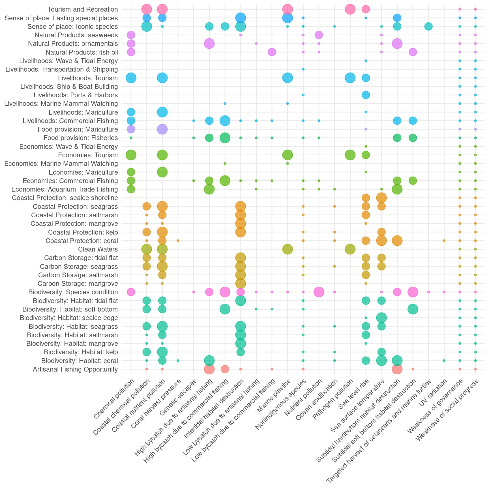
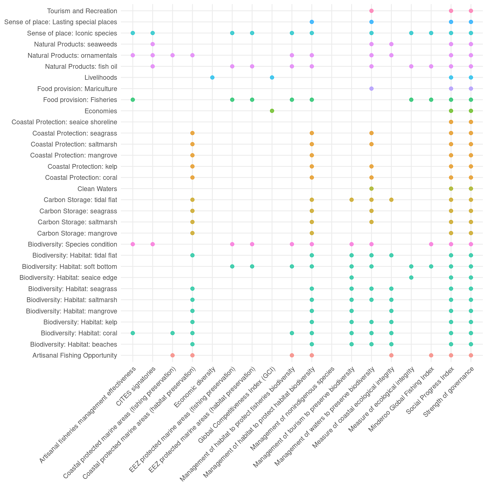

| Data | Short name | Category | Subcategory | Description |
|---|---|---|---|---|
| Chemical pollution | po_chemicals | ecological | pollution | Modeled chemical pollution within EEZ from commercial shipping traffic, ports and harbors, land-based pesticide use (organic pollution), and urban runoff (inorganic pollution) |
| Coastal chemical pollution | po_chemicals_3nm | ecological | pollution | Modeled chemical pollution within 3nm of coastline from commercial shipping traffic, ports and harbors, land-based pesticide use (organic pollution), and urban runoff (inorganic pollution) |
| Pathogen pollution | po_pathogens | ecological | pollution | Percent of population without access to improved sanitation facilities as a proxy for pathogen pollution |
| Nutrient pollution | po_nutrients | ecological | pollution | Modeled nutrient pollution within EEZ based on crop fertilizer and manure consumption |
| Coastal nutrient pollution | po_nutrients_3nm | ecological | pollution | Modeled nutrient pollution within 3nm based on crop fertilizer and manure consumption |
| Marine plastics | po_trash | ecological | pollution | Global marine plastic pollution |
| Nonindigenous species | sp_alien | ecological | alien species | Measure of harmful invasive species |
| Genetic escapes | sp_genetic | ecological | alien species | Introduced mariculture species (Mariculture Sustainability Index) as a proxy for genetic escapes |
| Subtidal soft bottom habitat destruction | hd_subtidal_sb | ecological | habitat destruction | Pressure on soft-bottom habitats due to demersal destructive commercial fishing practices (e.g., trawling) |
| Subtidal hardbottom habitat destruction | hd_subtidal_hb | ecological | habitat destruction | Presence of blast fishing as an estimate of subtidal hard bottom habitat destruction |
| Intertidal habitat destruction | hd_intertidal | ecological | habitat destruction | Coastal population density (25 mi from shore) as a proxy for intertidal habitat destruction |
| Coral harvest pressure | hd_coral | ecological | habitat destruction | Pressure on coral due to harvesting as a natural product |
| High bycatch due to commercial fishing | fp_com_hb | ecological | fishing pressure | Pressure due to industrial high bycatch fishing identified by discard tonnes and standardized by NPP |
| Low bycatch due to commercial fishing | fp_com_lb | ecological | fishing pressure | Pressure due to industrial low bycatch fishing identified by reported and IUU tonnes and standardized by NPP |
| Low bycatch due to artisanal fishing | fp_art_lb | ecological | fishing pressure | Pressure due to artisanal low bycatch fishing identified by reported and IUU tonnes and standardized by NPP |
| High bycatch due to artisanal fishing | fp_art_hb | ecological | fishing pressure | Pressure due to artisanal high bycatch fishing identified by discard tonnes and standardized by NPP |
| Targeted harvest of cetaceans and marine turtles | fp_targetharvest | ecological | fishing pressure | Targeted harvest of cetaceans and marine turtles |
| Sea surface temperature | cc_sst | ecological | climate change | Presure due to increasing extreme sea surface temperature events |
| Ocean acidification | cc_acid | ecological | climate change | Pressure due to increasing ocean acidification, scaled using biological thresholds |
| UV radiation | cc_uv | ecological | climate change | Pressure due to increasing frequency of UV anomolies |
| Sea level rise | cc_slr | ecological | climate change | Pressure due to rising mean sea level |
| Weakness of governance | ss_wgi | social | social | Inverse of World Governance Indicators (WGI) six combined scores |
| Weakness of social progress | ss_spi | social | social | Inverse of Social Progress Index scores |
Models
Regional and global Index scores
The overall index score for each region (\(I_{region}\)) is calculated as a weighted average of all the scores (\(G\)), for each goal (\(g\)) such that:
\[ { I_{region} }\quad =\quad \frac { \displaystyle\sum_{ g=1 }^{ N }{ { w }_{ g }{ G }_{ g } } }{ \displaystyle\sum _{ g=1 }^{ N }{ { w }_{ g } } }, (Eq. 5.1) \]
where, \(w_{g}\) is the weight for each goal.
For the global assessment, the goal weights (\(w_{g}\)) were assumed to be equal, even though we know this assumption does not hold for most individuals or across individuals within communities. Ideally these weights would be derived empirically, but such an effort would require surveying a full spectrum of people from every single country. This was beyond the scope of this project, but may be possible in a future application of the Index.
In many places certain goals are not relevant, for example, production-focused goals typically do not apply to uninhabited islands, and the coastal protection or carbon storage goals will not apply to regions without the relevant coastal ecosystems.
The overall global index score (\(I_{global}\)) is calculated as the area weighted average of the index scores (\(I_{region}\)) for each region (\(i\)):
\[ { I }_{ global }\quad =\quad \frac { \displaystyle\sum _{ i=1 }^{ N }{ { a }_{ i }{ I }_{ region,i } } }{ \displaystyle\sum _{ i=1 }^{ N }{ { a }_{ i } } }, (Eq. 5.2) \]
where, \(a_{i}\) is each region’s ocean area, based on the EEZ area.
Goal scores
Each goal score is the average of its current status and likely future status (Figure 5.1, see section 5: Goal models and data for methods used to calculate status of each goal). The Index assesses the current status of each goal relative to a reference point. Likely future status is estimated using: recent trends in current status; pressures that can stress the system and threaten future delivery of benefits; and resilience to such pressures, due to governance, institutional and ecological factors.
Figure 5.1. Pie chart describing the contribution of each dimension to the goal score

Each goal score, \(G\), is the average of its present status, \(x\), and its likely near-term future status, \(\hat x_{F}\):
\[ G \quad =\quad \frac {x \quad +\quad \hat x_{F} }{ 2 }, (Eq. 5.3) \]
The present status of goal, \(x\), is its present state, \(X\), relative to a reference point, \(X_{R}\), uniquely chosen for each goal:
\[ { x }_{ i }\quad =\quad \frac { X }{ X_{R} }, (Eq. 5.4) \]
The reference point, \(X_{R}\), can be determined mechanistically using a production function (e.g., maximum sustainable yield, MSY, for fisheries), spatially by means of comparison with another region (e.g., country X represents the best possible known case), temporally using a past benchmark (e.g., historical habitat extent), or in some cases via known (e.g., zero pollution) or established (e.g., 30% of waters set aside in MPAs) targets. Past benchmarks can either be a fixed point in time or a moving target (e.g., five years prior to most current data). The type of reference point can have important implications for interpretations of how a goal is doing in any given country.
For each region, the estimate of a goal’s likely near-term future status is a function of its present status, \(x\) modified by: recent trends, \(T\), in status; current cumulative pressures, \(p\), acting on the goal; and social and ecological resilience, \(r\), to pressures given the governance and social institutions in place to protect or regulate the system and the ecological condition of the system:
\[ \hat {x} _{F} \quad = \quad \left[ 1 \quad + \quad \beta T \quad + \quad \left( 1\quad -\quad \beta \right) \left( r \quad - \quad p \right) \right] x, (Eq. 5.5) \]
where, \(\beta\) represents the relative importance of the trend versus the resilience and pressure terms in determining the likely trajectory of the goal status into the future. We assume \(\beta = 0.67\), which makes trend twice as important as the pressure/resilience component. We chose this value because we believe the direct measure of trend is a better indicator of future (i.e., in five years) condition than indirect measures of pressure and resilience.
The role of the resilience and pressure dimensions is to improve our understanding of the likely near-term future condition by incorporating additional information beyond that provided by the recent trend. Pressure or resilience measures that were in existence in the past may have a cumulative effect that has not yet manifested itself in trend (e.g., fishing pressure may have increasingly negative impacts as successive year classes of fish become increasingly less abundant; resilience due to establishment of a marine protected area (MPA) may require a number of years before its benefits become apparent). In addition, the recent trend does not capture the effect of current levels of resilience and pressures. The expectation of a likely future condition suggested by the trend will become more or less optimistic depending on the resilience and pressure dimensions. If the effects are equal they cancel each other out.
Both resilience and pressure dimensions are scaled from 0 to 1, and trend is constrained to -1.0 ≤ \(T\) ≤ 1.0 (i.e., values outside this range are clamped to range end values).
The likely future status cannot exceed the maximum possible value of the status for each goal, which is 1.0. In reality data are rarely perfect, creating potential situations where likely future condition exceeds 1.0. To address these cases, we implemented two rules. First, if current status = 1.0, then trend is set = 0.0, since any trend > 0.0 in those cases must be due to incomplete or imperfect data. Second, status and likely future status scores were constrained to maximum value of 1.
Likely future status dimensions
Three dimensions are used to calculate likely future status: trends, pressure, and resilience. This section describes the calculations underlying these three dimensions.
Trend
Trend is the proportional change in status predicted to occur in 5 years, based on recent status data. In most cases, this is calculated by estimating the yearly change in status using a linear regression model (i.e., slope estimate) of the five most recent years of status data and multiplying this value by 5 to estimate the change five years into the future. To determine proportional change, we divide the slope estimate by the status value of the earliest year of data used in the trend calculation.
In OHI assessments prior to 2016, we calculated trend as the absolute change in status predicted to occur in 5 years. In 2016, we began calculating the proportional change by dividing the slope estimate by the status of the earliest year used in the trend calculation. Although this change rarely had a large effect on trend, or ultimate score values, this method is more consistent with how trend data is incorporated into the likely future status model (Eq. 4.5). If the \(\beta\), pressure (\(p\)), and resilience (\(r\)) components of the likely future status model are ignored (this assumes the pressure and resilience components fully cancel each other out), the equation becomes:
\(x(1 + trend)\),
where, \(x\) is the current status. Given this, if \(x=50\), and we expect trend to increase by 10% over 5 years, then likely future status would be: \(50(1 + 0.10) = 55\).
Trends indicate proportional change in status, so they typically range from -100% to +100% (or, -1.0 to +1.0), therefore we constrained values to this range.
For all goals we included the trend estimate, even if the linear model was not statistically significant (i.e., P<0.05). We chose to include these values for two key reasons: 1) we were not trying to predict the future but instead only indicate likely condition. 2) in nearly all cases we did not have sufficient data to conduct more rigorous trend analyses.
In some cases, we were not able to estimate trend using status data due to data limitations. In these cases, we used alternative methods to estimate trend. Specific details about trend calculations for each goal are provided in section 5.
We recognize several possible shortcomings in using past trends to estimate likely future status. We assume a simple linear trend, but this is not always the case due to a variety of variables such as altered pressures and resilience responses, nonlinear patterns in system response, stochastic environmental and biological variability, and simple bounding conditions (status cannot go below zero or above 1.0, and so the trend must level off as it approaches these values). Also, it is important to note that the same trend value could reflect many different processes. For example, declines due to unsustainable harvest of a resource can look identical to declines due to restrictions placed on resource users to allow the resource to recover. It also may be too short a time frame to determine true trends or the causes of those trends, but the intent here is more about informing the likely near-term trajectory.
Pressure
The pressure score, \(p\), describes the cumulative pressures acting on a goal which suppress the goal score. Pressure scores range from 0 to 1, and they are calculated for each goal and region and include both ecological (\(p_{E}\)) and social pressures (\(p_{S}\)) (Table 5.1, Figure 5.2), such that:
\[ { p }\quad =\quad \gamma *{ p }_{ E }\quad +\quad (1-\gamma )*{ p }_{ S }, (Eq. 5.6) \]
where \(\gamma\) is the relative weight for ecological vs. social pressures and equals 0.5 for the global assessment. At global scales, little evidence exists to support unequal weighting of ecological and social pressures for most goals; furthermore, unequal weighting would require unique values for each goal and there is currently no empirical work to guide such decisions. At local or regional scales there may be clear evidence for unequal weights per goal and \(\gamma\) should be adjusted accordingly.
Figure 5.2. Pressure components Pressure is calculated using both social and ecological pressures. Ecological pressures include 5 subcategories (fishing pressure, habitat destruction, climate change, water pollution, and species/genetic introductions).

Table 5.1. Pressure data and categories Description of the stressor data layers used to calculate overall pressure for each goal and region for the global assessment (descriptions of pressure data in section 6). Each data layer is assigned to an ecological or social category, and ecological data are assigned to one of five subcategories.
Ecological pressure
We assessed five broad, globally-relevant categories of ecological stressors: fishing pressure, habitat destruction, climate change (including ocean acidification), water pollution, and species introductions (invasive species and genetic escapes). The five categories are intended to capture known pressures to the social-ecological system associated with each goal. Each pressure category may include several stressors. The intensity of each stressor within each OHI region is scaled from 0 to 1, with 1 indicating the highest stress (e.g., example of one of these data layers is sea surface temperature).
We determined the rank sensitivity of each goal/subgoal to each stressor (or, when possible, an element of the goal, such as a specific habitat). We ranked ecological pressures as having ‘high’ (score = 3), ‘medium’ (score = 2), ‘low’ (score = 1), or ‘no’ (score = NA) impact (Table 5.2). Wherever possible we relied on peer-reviewed literature to establish these rankings, and relied on our collective expert judgment in cases with no available literature (Table S28 in Halpern et al. 2012). The pressure ranks are based on a rough estimate of the global average intensity and frequency of the stressor. We recognize that this will create over- and under-estimates for different places around the planet, but to address such variance in a meaningful way would require a separate weighting matrix for every single region on the planet, which is not feasible at this time.
Table 5.2. Pressure matrix Rank sensitivity of each goal (or, goal element) to each stressor.

To estimate the cumulative effect of the ecological pressures, \(P_E\), we first determined the cumulative pressure, \(p\), within each ecological category, \(i\) (e.g., pollution, fishing, etc.):
\[ { p }_{ i }\quad =\quad \frac { \displaystyle\sum _{ i=1 }^{ N }{ { w }_{ i }{ s }_{ i } } }{ 3 }, (Eq. 5.7) \]
Where \(w_i\) is the sensitivity ranks (Table 5.2) describing the relative sensitivity of each goal to each stressor, and \(s_i\) is intensity of the stressor in each region on a scale of 0-1. We divided by the maximum weighted intensity that could be achieved by the worst stressor (max = 3.0).
If \(p_i\) > 1.0, we set the value equal to 1.0. This formulation assumes that any cumulative pressure load greater than the maximum intensity of the worst stressor is equivalent to maximum stressor intensity.
For the goals for which sensitivity ranks were assigned for specific habitats or livelihood sectors (i.e., goal elements), we calculated the weighted sum of the pressures for only those habitats or sectors that were present in the country.
The overall ecological pressure, \(p_E\), acting on each goal and region was calculated as the weighted-average of the pressure scores, \(p\), for each category, \(i\), with weights set as the maximum rank in each pressure category (\(w_{i\_max}\)) for each goal, such that:
\[ { p }_{ E }\quad =\quad \frac { \displaystyle\sum _{ i=1 }^{ N }{ { (w }_{ i\_ max }*{ p }_{ i }) } }{ \displaystyle\sum_{ i=1 }^{ N } { { w }_{ i\_ max } } }, (Eq. 5.8) \]
Stressors that have no impact drop out rather than being assigned a rank of zero, which would affect the average score.
Caveats
There were a number of ecological pressures not included in our assessment, including altered sediment regimes, noise and light pollution, toxic chemicals from point sources, nutrient pollution from atmospheric deposition and land-based sources other than fertilizer application to agricultural land. In all cases, global data do not exist in a format that would allow for adequate comparisons within and among countries. Future global or regional iterations of the Index could include these data as they become available.
The calculation of ecological pressures is sensitive to the number of stressors within each category (but not to the number of categories). Inclusion of additional stressors within categories would require careful calibration of ranks so that the cumulative effect of a larger number of stressors does not overestimate pressure.
A key assumption in our assessment of ecological pressures is that each goal has a linear and additive response to increases in intensity of the stressors. Clearly many ecosystems respond non-linearly to increased stressor intensity, exhibiting threshold responses, and there are likely nonlinear interactions among stressors. Unfortunately little is known about the nature of these types of nonlinearities and interactions so we could not include them in any meaningful way.
Resilience
To calculate resilience for each goal and region, \(r\), we assess three resilience categories (Table 5.3, Figure 5.3): ecological integrity, \(Y_{E}\), regulatory efforts that address ecological pressures, \(Y_R\), and social integrity, \(Y_{S}\). The first two measures address ecological resilience while the third addresses social resilience. When all three aspects are relevant to a goal, resilience is calculated as:
\[ r\quad =\quad \gamma *(\frac { { Y }_{ E }+ {Y}_{R} }{ 2 } )+(1-\gamma )*{ Y }_{ S }, (Eq. 5.10) \]
We chose \(\gamma = 0.5\) so the weight of resilience components that address ecological systems (ecosystem and regulatory) vs. social systems would be equivalent to the proportions used in the model to calculate pressure. Resilience indicators are intended to directly address, as much as possible, specific pressures. Consequently, within a pressure category, resilience scores should not exceed pressure scores, otherwise likely future status scores will be inflated. For the 2021 OHI assessment, in a significant modification from past OHI methods (Halpern et al. 2012), where total resilience scores were allowed to exceed total pressures scores, we have capped resilience such that it will not exceed the corresponding pressures, e.g., \((r−p) ≤ 0\) (i.e. \(r≤p\)), when calculating the likely future status for a given goal (O’Hara et al. 2020).
Figure 5.3. Resilience components Resilience includes both ecological and social resilience categories. Ecological resilience includes an ecosystem and regulatory category. The regulatory category includes 5 subcategories that mirror the pressure categories (fishing pressure, habitat destruction, climate change, water pollution, and species/genetic introductions) as well as a goal-specific category.

Each resilience category is composed of 1 or more data layers (Table 5.3) with values scaled from 0-1, reflecting the magnitude of resilience, for each region (an example of one of these data layers describes tourism regulations that preserve biodiversity). Each resilience data layer is assigned a weight of 0.5 or 1 (Table 5.3) that is applied equally across all the goals (or, goal elements) influenced by the resilience layer (i.e., resilience matrix, Table 5.4). This information is used to calculate a score for each resilience category. The weight reflects information about governance.
Table 5.3. Resilience categories and weights The data layers used to calculate resilience for each goal and region for the global assessment (descriptions of data layers and sources are in section 6). Each data layer is assigned to an ecological or social category. The ecological category is broken into an ecosystem and regulatory category type.
Table 5.4. Resilience matrix Describes which goals/subgoals (and goal elements) are influenced by the resilience data layers.

Ecological resilience
Ecosystem integrity
Ecosystem integrity, e.g., food web integrity, is measured as relative condition of assessed species in a given location (scores from the species subgoal were used to estimate ecosystem integrity). For some goals, there is little evidence that our index of ecosystem integrity directly affects the value of the goal (or subgoal). In these instances, ecological integrity falls out of the resilience model.
For the global assessments, we only have one data layer describing ecosystem integrity, however, if there were multiple layers the overall score for ecosystem integrity would be a weighted mean of all the data layers, \(i\), that describe ecosystem integrity (\(y_{E,i}\)) and influence the goal:
\[ { Y }_{ E }\quad =\quad \frac { \displaystyle\sum _{ i=1 }^{ N }{ { w }_{ i }{ y_E}_{i} } }{ \displaystyle\sum _{ i=1 }^{ N }{ { w }_{ i }}}, (Eq. 5.11) \]
Regulatory resilience
Regulatory resilience (\(Y_R\)) describes the institutional measures (e.g., rules, regulations, and laws) designed to address ecological pressures. The regulatory resilience datasets are grouped into five categories that address the 5 pressure categories: fishing pressure, habitat destruction, climate change (including ocean acidification), water pollution, and species introductions (invasive species and genetic escapes). There is also an additional category for goal-specific regulations that apply to a goal or goals, but do not address a larger pressure category.
Weights were based effectiveness of governance. Governance is a function of 1) institutional structures that address the intended objective, 2) a clear process for implementing the institution is in place, and 3) whether the institution has been effective at meeting stated objectives. At global scales it is very difficult to assess these three elements; we usually only had information on whether institutions exist. However, in some cases we had detailed information on institutions that enabled us to assess whether they would contribute to effective management, and thus, increased ocean health. In those latter cases, we gave more weight to those measures (Table 5.3).
For each region and goal, we calculated a score for each regulatory category, \(y_{R, i}\), as a weighted mean of the resilience data layers, \(r_{i}\), that influence the goal (Table 5.4):
\[ y_{R, i}\quad =\quad \frac { \displaystyle\sum _{ i=1 }^{ N }{ { w }_{ i }{ r }_{ i } } }{ \displaystyle\sum _{ i=1 }^{ N }{w_i} }, (Eq. 5.12) \]
where, \(w_i\) is the weight in Table 5.3.
To calculate the overall regulatory resilience, \(Y_{R}\), we averaged the scores for each regulatory category.
References
Halpern, Benjamin S., Catherine Longo, Darren Hardy, Karen L. McLeod, Jameal F. Samhouri, Steven K. Katona, Kristin Kleisner, et al. 2012. “An Index to Assess the Health and Benefits of the Global Ocean.” Nature. https://doi.org/10.1038/nature11397.
Kaufmann, Daniel, Aart Kraay, and Massimo Mastruzzi. 2010. “The Worldwide Governance Indicators: Methodology and Analytical Issues.” {SSRN} {Scholarly} {Paper} ID 1682130. Rochester, NY: Social Science Research Network. http://info.worldbank.org/governance/wgi/index.aspx#home.
O’Hara, Casey C., Courtney Scarborough, Karen L. Hunter, Jamie C. Afflerbach, Karin Bodtker, Melanie Frazier, Julia S. Stewart Lowndes, R. Ian Perry, and Benjamin S. Halpern. 2020. “Changes in Ocean Health in British Columbia from 2001 to 2016.” Edited by Andrea Belgrano. PLoS ONE 15 (1): e0227502. https://doi.org/10.1371/journal.pone.0227502.
Social pressures
Social pressures describe the lack of effectiveness of government and social institutions. Social stressors are described for each region on a scale of 0 to 1 (with one indicating the highest pressure). Social pressure is then calculated as the average of the social stressors:
\[ { p }_{ S }\quad =\quad \frac { \displaystyle\sum _{ i=1 }^{ N }{ z_{ i } } }{ N }, (Eq. 5.9) \]
where \(z_{i}\) are the social pressure measures specific to the goal. Unequal weighting may be appropriate in some cases but is difficult to assess currently, particularly at the global scale.